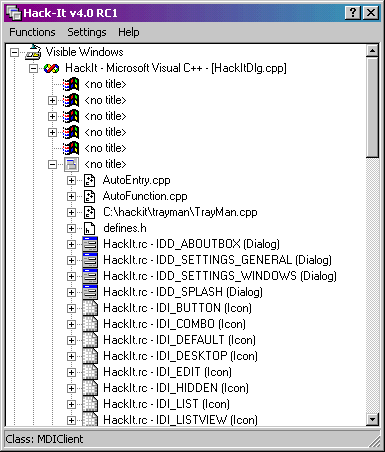

Child windows are windows in the system that have a parent window. They appear as items at levels below the top-level items as shown below:

A child window can also be a parent to other child windows, and this structure is reflected in the window list. If a parent window is not visible, then generally none of the child windows are visible either.
Almost every user interface item you see on the screen is represented internally by a window. There are many times more child windows on the system than top-level windows, since edit boxes, buttons, lists, trees, and many other primitives are all windows.
Child windows can be manipulated just as top-level windows can, but these manipulations will only take place within the child’s parent and relative to the child’s sibling windows.